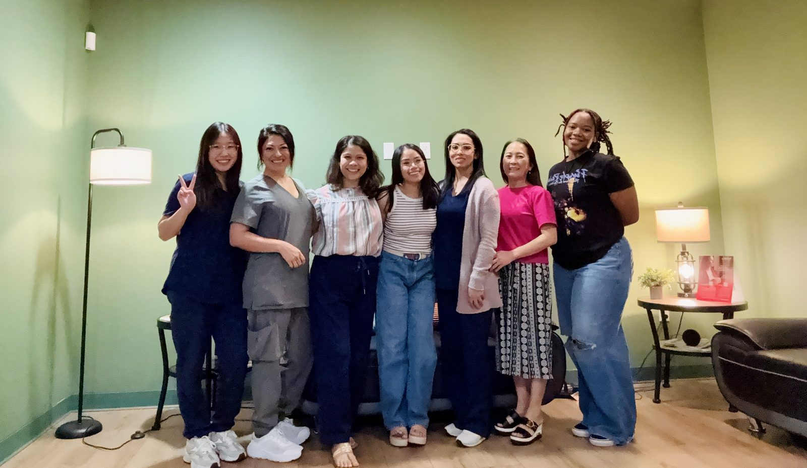

Tammy Spear — Healthcare Operations Leader, Clinic Turnaround & Multi-Site Management, San Antonio, TX
Healthcare Operations · Health IT · Behavioral Health
Driven by curiosity,
anchored by coherence
From Plan II Honors to Dell Medical School, health informatics to the classroom, clinic operations to executive leadership—each chapter added dimension. The through-line is curiosity, rigor, and a persistent instinct for making complex systems work.
Explore the workBuilt to connect
what others separate
Born in Ho Chi Minh City, raised in Houston, and sent on a Department of Education fellowship to study Hindi across eighteen months in India, I have spent my career in the spaces between disciplines. I am a published researcher, certified project manager, and the lead manager of the most productive clinic in a multi-site interventional psychiatry network. My work sits at the intersection of clinical operations, data analysis, and organizational development. The sectors I have worked across — healthcare, education, public health research — do not silo well, and that is precisely the point.
Earlier academic records and undergraduate publications — including the 2014–2015 Unrestricted Endowed Presidential Scholarship and the College of Liberal Arts Honors Day recognition — appear under my given name, Thientam Pham (also rendered Thientam Ly Pham, Tammy Pham, Tammy Ly Spear).
Right now, I run the Stone Oak clinic at Heading Health — currently the highest-volume site in the network — and serve as Lead Manager across eight sites. The expansion work happening now is the most operationally interesting problem I’ve had: scaling a psychiatric service line that was designed for boutique delivery into something that can hold at volume without losing clinical quality.
Certifications
Tools & fluencies
Operations & Strategy
- Healthcare Operations
- Clinical Operations
- Revenue Cycle Management
- Multi-Site Program Management
- Change Management
- Quality Improvement
- Capacity Planning
- SOP Development
- Process Improvement
- Patient Flow Optimization
- Audit Readiness
Compliance & Regulatory
- HIPAA Compliance
- DEA Regulatory Compliance
- FDA REMS Compliance
- Prior Authorization Management
- PHI Authorization Protocols
Analytics & Tools
- Power BI & Tableau
- SQL · MySQL · R · STATA
- Excel (Advanced)
- Jira · Agile · Waterfall
EHR Platforms
- AMD
- Epic
- athenahealth
- eClinicalWorks
- NextGen · Allscripts · Cerner
Selected positions
Present
Lead Clinic Operations Manager
Primary liaison to executive leadership across eight clinic sites. Led a $1.5M Brainsway Deep TMS expansion including staff certification, prior authorizations, and treatment template configuration. Designed the company’s first scalable onboarding program with nursing and compliance leadership. Recruited and developed management and clinical teams for accelerated multi-site growth.
View performance data →Jan 2026
Clinic Operations Manager
Drove top-ranked performance: 143 treatments in a single week, 90.5% scheduled-to-treated efficiency, 100% M1 patient retention. Secured executive approval for a four-room expansion through a utilization-based capacity investment proposal. Implemented M1–M3 retention protocols and maintained REMS, DEA, and HIPAA compliance.
Dec 2023
Software Implementation Specialist
Led 47 client accounts through concurrent SaaS go-lives and upgrades, generating $500K in revenue within 11 months with 98% client satisfaction. Delivered end-user software training as an integral part of the role, equipping clinical and administrative staff to operate the platform post-go-live. Managed 5–6 simultaneous software conversions and 30+ vendor integrations. Restructured support ticket triage via Jira, reducing time-to-resolution by 10%.
Mar 2025
Science Teacher
Instructor of record for 193 students at an International Baccalaureate certified program. Developed TEKS and NGSS-aligned curriculum for Title I, GT, EB/ELL, and IEP/504 learner populations. Earned Texas 4-8 Science and English as a Second Language certifications. Offered a full-time contract; declined in favor of Heading Health.
A clinic transformed
by design
From day of hire to Lead Clinic Operations Manager in six months. The data below tracks what happened to San Antonio’s patient volume, revenue, utilization, and retention during that period—sourced directly from internal clinic performance dashboards.

Team photoMonthly treatment volume grew 25% from June to October 2025, surpassing the clinic’s 496-treatment room capacity for three consecutive months and driving the four-room expansion proposal. April 2026 is projected to be 600+ total treatments with 710 currently scheduled.
Revenue and profit tracked volume closely. Clinic margins consistently exceeded 82%, peaking at 86.2% in October 2025.

Utilization exceeded full capacity for Aug–Oct 2025, confirming—in numbers leadership could act on—the clinical and business case for expansion.

M1 retention remained above 84% across all tracked cohorts, with a documented peak of 100%. M2 retention held above 65% for most months.

The clinic’s resurrection program returned lapsed patients to active treatment—contributing 14–30 patients per month from an otherwise lost cohort.
What the numbers don’t show
Behind the utilization rates and margin percentages is a team built deliberately—hired with intention, trained with rigor, retained through genuine investment in their development.
The expansion case
After presenting a four-room expansion proposal with utilization data, treatment-per-room analysis, and retention projections to the executive team, I secured approval and increased capacity by 15% per month.
Selected work
The patient in the room is one scale of the problem. These projects looked at a different scale — population data, diagnostic edge cases, structural determinants that the clinical encounter doesn’t reach — and the ability to capture the details at both a close and wide lens is what intrigues and confounds me.
Cotard’s Delusion: A Clinical Case Study
First-name author of a 6-person team. Led publication of a case study documenting Cotard’s Delusion—a rare neurological disorder in which a patient believes they are dead or do not exist—one of the most unusual presentations in clinical psychiatry.
Opioid Fatality Trend Analysis
Designed ETL pipelines and built interactive Tableau dashboards providing geospatial visualization of opioid fatality trends spanning 8 years across the United States.
Social Determinants of Health: STATA Modeling
Secured $20,000 in research funding to examine social determinants of health factors using econometric modeling. Presented findings at the Plan II Thesis Symposium to faculty, peers, and external reviewers.
Let’s connect
I am always interested in ambitious projects that explore what efficiency and excellence can achieve in an operational model. Currently exploring opportunities in sustainable systems design for healthcare delivery.